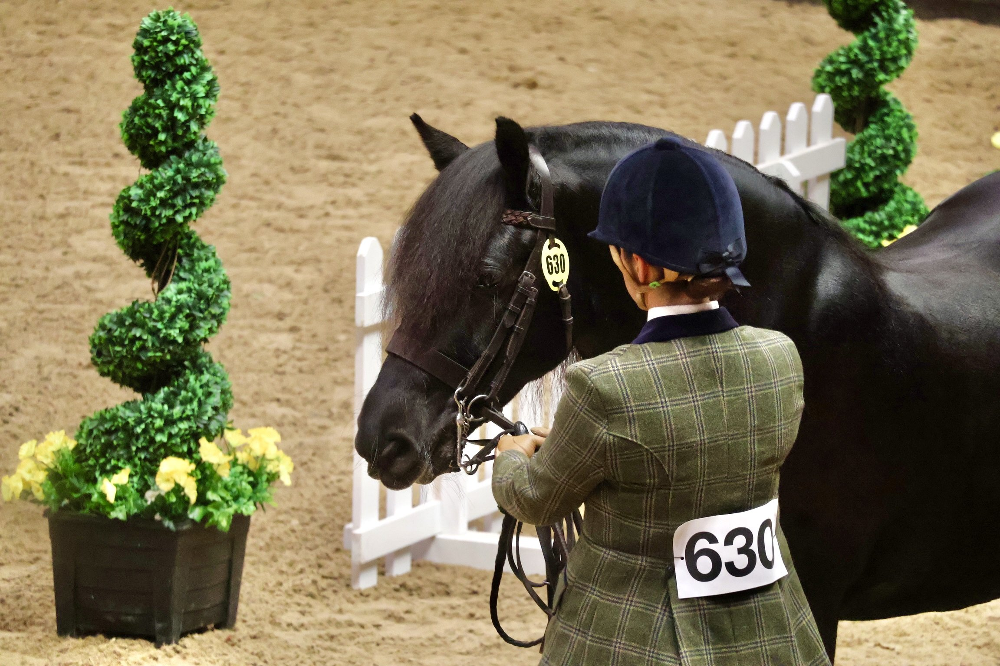
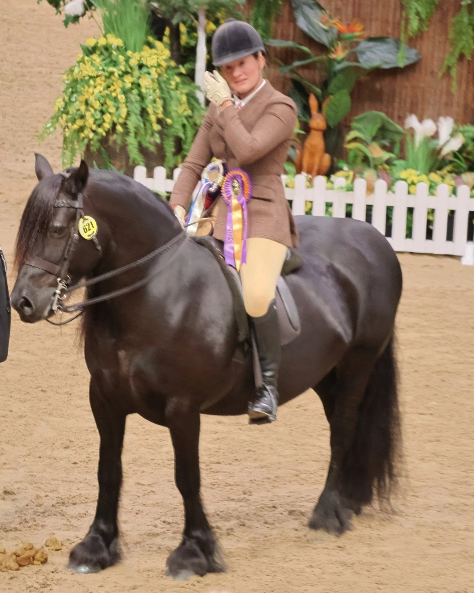
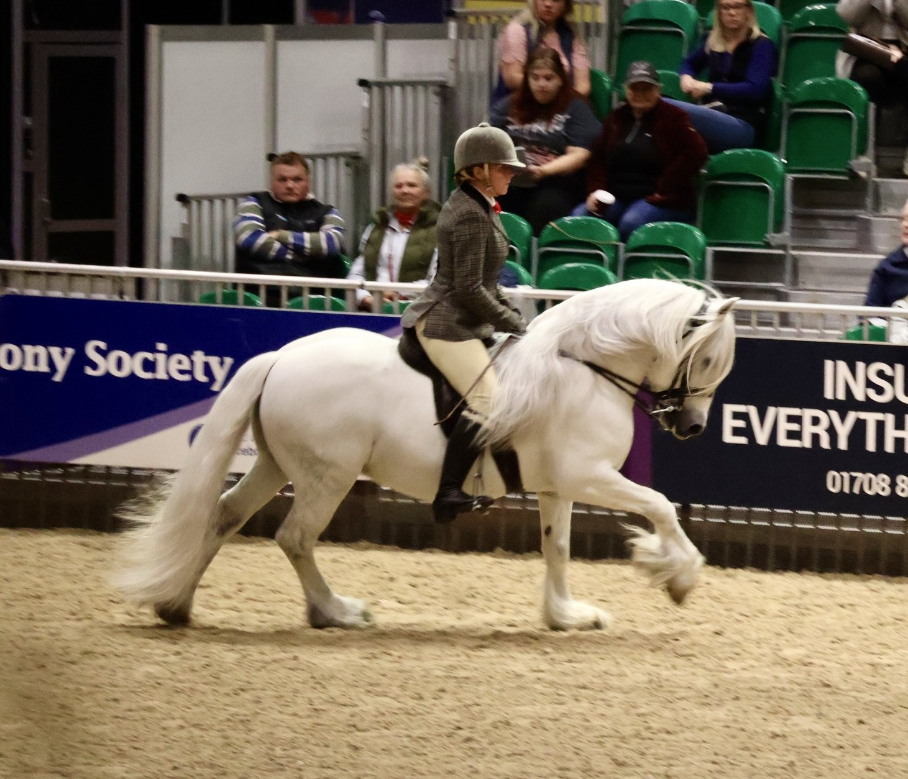
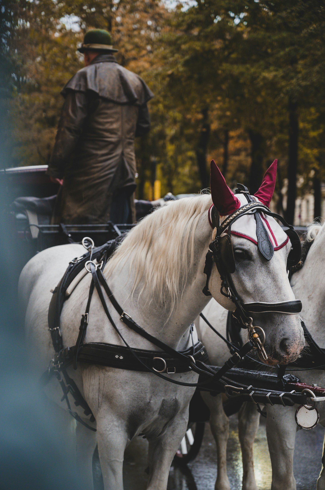
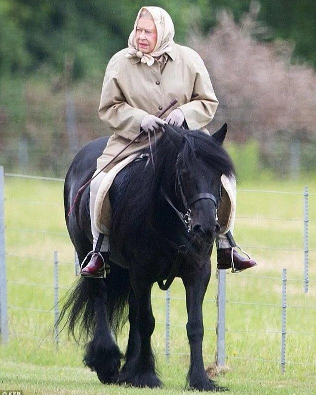
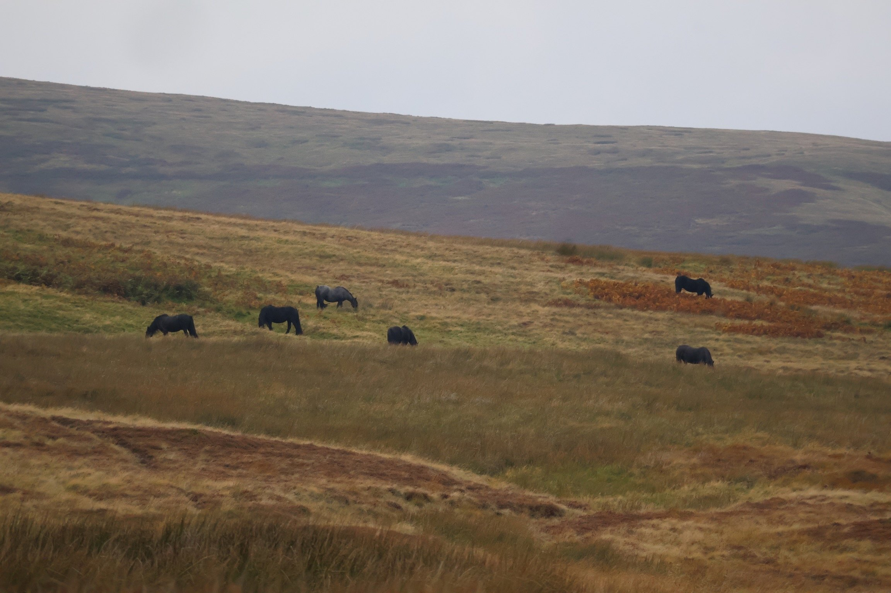

The Fell Pony
Shaped by climate, labour, and isolation, the Fell Pony developed as a practical mountain partner long before it became a recognised heritage breed. Its story is one of utility first: carrying, pulling, and enduring where lighter horses could not.

A Heritage of the Hills
The Fell Pony is among Britain's oldest native breeds, its roots tracing back to settlers who once crossed the northern lands. The Romans brought sturdy pack ponies to transport ore and supplies along their Cumbrian outposts — animals valued for endurance and discipline rather than beauty. Centuries later, the Vikings left their own imprint, bringing small, powerful mountain ponies from Scandinavia that mingled with the local stock.

The result was a breed built for survival and service. Sure-footed enough for rocky passes, strong enough to carry heavy loads, and calm enough to endure long days in harsh weather. Fell Ponies became the working heart of northern England: hauling iron and slate, driving sheep across high country, and carrying riders through difficult terrain. Every feature — from their dense coat to their steady frame — is shaped by that working history.
Character and Type
Compact yet powerful, Fell Ponies stand around 13–14 hands high, with deep chests, strong legs, and abundant manes and tails that guard against wind and rain. In person, what stands out is their substance — they carry the depth and strength of a cob rather than a small pony. Many show a long, slightly sway back and a cresting neck that gives them a noble, almost old-world look: more workhorse than show pony.

Traditionally black — though also found in brown, bay, or grey — they are built for endurance and balance: steady under saddle, dependable in harness, and confident on rough ground. Though "pony" in name, they are in truth cob-sized working animals: tough, versatile, and unmistakably designed for the demands of real labour.
Fell Pony — At a Glance
- Origin: Cumbria, northern England
- Height: 13–14 hands
- Colours: Black (most common), brown, bay, grey
- Influences: Roman pack ponies; Scandinavian Viking mountain ponies
- Historic use: Pack haulage (iron, slate, coal), sheep droving, riding
- Key traits: Sure-footed, endurance, dense weather-resistant coat, abundant mane and tail
- Governing body: The Fell Pony Society
- Notable champion: Queen Elizabeth II — kept Fell Ponies at Balmoral for decades
Tack and Tradition
Historically, Fell Ponies were tacked for work rather than show — fitted with plain leather bridles, sturdy harnesses, and minimal ornamentation. Their tack reflected their purpose: to carry, pull, and endure.

Today, while still celebrated in traditional turnout classes, Fell Ponies are just as likely to be seen in modern English saddles on the trail, or in harness at local fairs and driving events. The breed's working versatility has translated naturally into modern leisure riding, trekking, and competitive driving.
A Living Symbol
To see a Fell Pony grazing on the open moor is to glimpse a living piece of history — a creature shaped by wind, stone, and human hands. They embody strength without spectacle, loyalty without noise, and a timeless partnership between horse and human that still runs deep through the northern hills.

"They embody strength without spectacle, loyalty without noise, and a timeless partnership between horse and human that still runs deep through the northern hills."
Enduring Legacy
Thanks to the efforts of dedicated breeders and the Fell Pony Society, the breed remains a living link to Britain's working past. The late Queen Elizabeth II's affection for her Fell Ponies — often seen leading them through the Balmoral estate — helped preserve public interest in their future. They stand today not just as heritage animals, but as ambassadors of a partnership that built communities, fed families, and shaped a landscape.

The Fell Pony is not a relic. It is a working breed that outlasted the industry that created it, adapted to the world that replaced it, and kept its character intact through both. In an age of specialist horses and engineered bloodlines, there is something quietly extraordinary about that.
Related Stories

The Horses of the Camargue
Tough, white, and semi-feral, the Camargue horse is a living part of southern France's wetland culture. Its story, like the Fell's, is one of landscape shaping breed.

The Australian Stock Horse: Built for the Bush
Forged from necessity on Australia's vast stations, the Australian Stock Horse shares the Fell's DNA of utility — a working animal shaped entirely by the demands of its landscape.

Old Billy the Barge Horse: The Long Life of a Working Legend
Born in 1760, Old Billy worked Britain's canals for over six decades — a reminder that the working horse was once the engine of the industrial world.